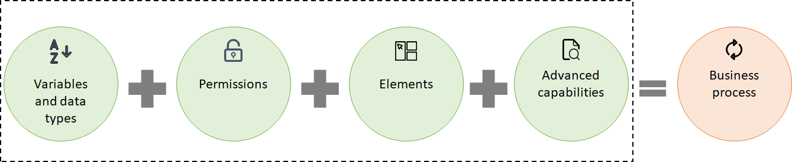

Business processes
BMC Helix Innovation Studio provides Process designer, a graphic-based interface, to create and customize business processes of a Digital Service application. Processes are the named services of an application that are responsible to perform a business logic and achieve the application purpose. You can invoke business logic for an application by calling processes of that application. Each process has a name, inputs, and outputs. For example, Approval is the sole service of the Approval application, that can be invoked by calling the Approval process through REST API or through metadata.
Benefits of creating a business process
By creating a process, you can achieve different business goals, for example:
Onboard employees
Approve or reject employee requests
Authenticate users
Learn more about developing a business process in Defining processes to accomplish business goals.
Components of a business process
You can use the Process designer in BMC Helix Innovation Studio to create business processes. Creating a process involves different components from accessing the designer to adding action elements to the process. These components ensure that your process is complete and suits your requirements.
The following image shows the different components involved in a process:

Process variables and data types
A process variable is a parameter that you configure depending on the purpose of your process. For example, you want to send an approval notification to a user with the date of approval displayed in the notification.
Different variable data types are available, for example Date/Time, Boolean, Integer, and so on.
Learn more about process variables in Process variables and data types.
Process permissions
You can set process permissions for a group and individual role. You have two levels of permissions for processes - Read and Execute. These permissions define who can access and update the process.
Learn more about process permissions in Defining processes to accomplish business goals.
Process elements
Process designer elements are the building blocks of any process. These elements perform certain actions depending on their configuration.
For example, in a process to send an approval notification to a user, you add the Send Message process element. You configure the element to display the notification subject as Request approved, and also to display the date and time of the approval.
Learn more about the process elements in Process designer elements.
Advanced capabilities
To perform complex or advanced functionalities, you can add various capabilities to your process, for example, add timer, add wait states, integrate with other applications, and so on.
Learn more about process capabilities in Defining the application business logic through processes.